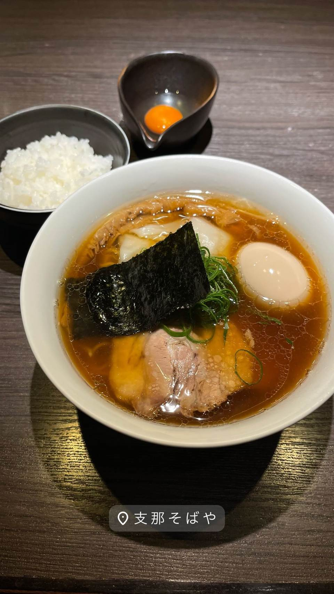
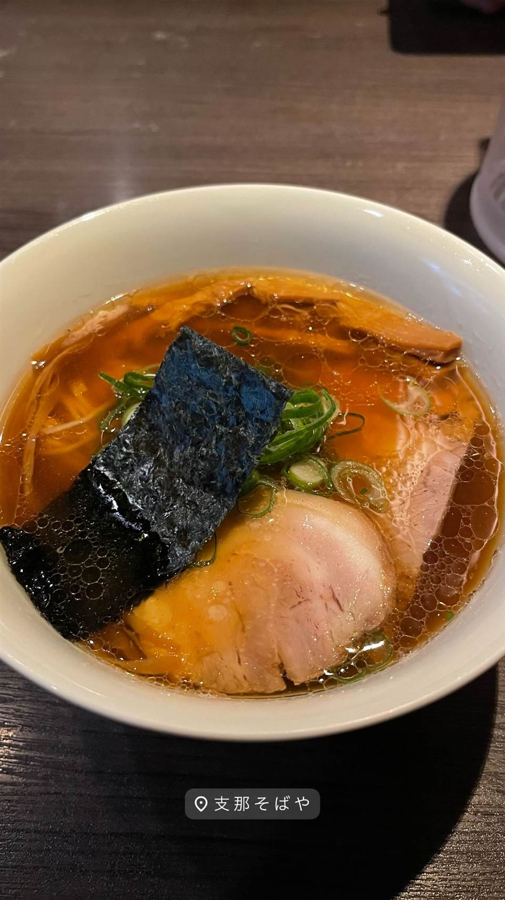

★ また行きたい醤油・中華そばで12位
支那そばや 本店
「ラーメンの鬼」佐野実が生んだ醤油ラーメンを妻が継ぐ
支那そばや
「ラーメンの鬼」と呼ばれた佐野実氏が1986年に創業し、現代醤油ラーメンの水準を引き上げた伝説的な名店。地元・戸塚に本店を構えたのは2008年で、2014年の佐野氏逝去後は妻・しおり氏がその哲学を受け継いでいる。

TRIVIA
豆知識
- 創業者・佐野実氏は「ラーメンの鬼」の異名を持つ
- 戸塚区出身の佐野氏が地元・戸塚に本店を構えたのは駅前再開発がきっかけ
REVIEWS
世間の評判
97.3ラーメンDB
伝説の一杯と出汁の完成度
- 現代ラーメン界の礎を築いた名店としての格を感じるという声が多い
- 醤油出汁はバランス良く濃厚さと繊細なスパイス使いが光ると評価されている
- 塩ラーメンの完成度や着丼までの提供スピードの速さを評価する声がある
ラーメンデータベース 口コミ413件・総合97位・最新 2026-08
| 創業 | 戸塚本店は2008年11月開店（藤沢・鵠沼海岸の初代店は1986年8月6日創業） |
|---|---|
| 系譜 | 「ラーメンの鬼」と呼ばれた佐野実氏が創業。佐野氏没後は妻・佐野しおり氏が店主を継承。 |
| 看板 | 醤油ラーメン（支那そば） |
| こだわり | 全国各地を自ら回って選び抜いた素材にこだわり抜いたスープ作りで知られる。 |
| 掲載・評価 | 新横浜ラーメン博物館にも出店した実績を持つ伝説的な名店。 |
| どこから | 東京から1時間ほど |
| 予算 | 昼 ¥1,000～¥1,999 夜 ¥1,000～¥1,999 |
| 場所 | 戸塚駅 神奈川県横浜市戸塚区 |
食べたもの：醤油ラーメン
NEARBY
近い店・同じ系統の店
-
 ★
醤油・中華そば 大口駅
中華そば 髙野
元美容師の店主が作る、昆布水に浸した自家製麺の中華そば
昼 ¥1,000～¥1,999 夜 ¥1,000～¥1,999
★
醤油・中華そば 大口駅
中華そば 髙野
元美容師の店主が作る、昆布水に浸した自家製麺の中華そば
昼 ¥1,000～¥1,999 夜 ¥1,000～¥1,999
-
 ★
醤油・中華そば 池尻大橋駅
八雲（やくも）
骨を一切使わないのに深いコクの特製ワンタン麺
昼 ¥501～¥1,000 夜 ¥501～¥1,000
★
醤油・中華そば 池尻大橋駅
八雲（やくも）
骨を一切使わないのに深いコクの特製ワンタン麺
昼 ¥501～¥1,000 夜 ¥501～¥1,000
-
 ★
醤油・中華そば 六本木駅
入鹿TOKYO 六本木店
鶏・豚・貝・海老を別々に炊く独自のカルテットスープ
昼 ¥1,000～¥1,999 夜 ¥1,000～¥1,999
★
醤油・中華そば 六本木駅
入鹿TOKYO 六本木店
鶏・豚・貝・海老を別々に炊く独自のカルテットスープ
昼 ¥1,000～¥1,999 夜 ¥1,000～¥1,999
-
 ★
醤油・中華そば 千歳船橋
中華そば 西川
永福町大勝軒などで8年修行した店主の煮干しそば、百名店5年連続
昼 ¥1,000～¥1,999 夜 ¥1,000～¥1,999
★
醤油・中華そば 千歳船橋
中華そば 西川
永福町大勝軒などで8年修行した店主の煮干しそば、百名店5年連続
昼 ¥1,000～¥1,999 夜 ¥1,000～¥1,999
-
 ★
醤油・中華そば 祖師ヶ谷大蔵駅
世田谷中華そば 祖師谷七丁目食堂
柴崎亭店主が手がける、煮干しと小豆島醤油の中華そば
昼 ～¥999 夜 ～¥999
★
醤油・中華そば 祖師ヶ谷大蔵駅
世田谷中華そば 祖師谷七丁目食堂
柴崎亭店主が手がける、煮干しと小豆島醤油の中華そば
昼 ～¥999 夜 ～¥999
-
 ★
醤油・中華そば 鷺沼
麺処 懐や
中村屋仕込み、一度に2杯しか作らない淡麗系
昼 ～¥999
★
醤油・中華そば 鷺沼
麺処 懐や
中村屋仕込み、一度に2杯しか作らない淡麗系
昼 ～¥999